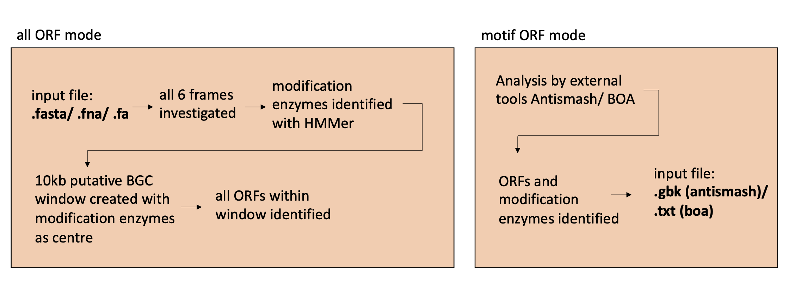
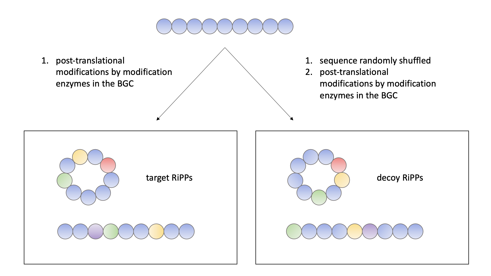
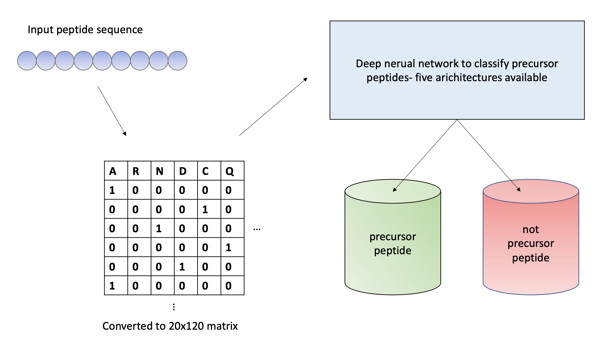
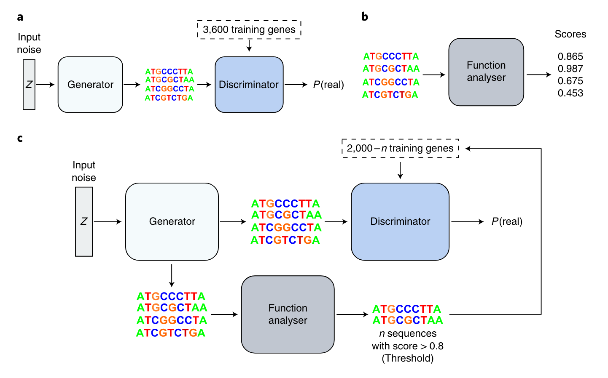

1 Introduction
1.1 Natural products with antimicrobial properties
Microorganisms are a great source of naturally occurring bioactive compounds with diverse properties ranging from antimicrobial to anticancer (1,2)1. Bahar AA, Ren D. Antimicrobial Peptides. Pharmaceuticals. 2013 Dec;6(12):1543–75.
2. Deslouches B, Di YP. Antimicrobial peptides with selective antitumor mechanisms: prospect for anticancer applications. Oncotarget. 2017 Jul 11;8(28):46635–51.. Many of those properties have been utilised in the development of antibiotics and have great implications in the medical field. However, since the 1990s, there has been a sharp decline in the number of new antibiotics being discovered. It has been suggested by the GNPS molecular networking that many of the sequences that code for small compounds remain untapped in the genome (3,4)3. Cao L, Gurevich A, Alexander KL, Naman CB, Leão T, Glukhov E, et al. MetaMiner: A Scalable Peptidogenomics Approach for Discovery of Ribosomal Peptide Natural Products with Blind Modifications from Microbial Communities. Cell Syst. 2019 Dec 18;9(6):600-608.e4.
4. Gurevich A, Mikheenko A, Shlemov A, Korobeynikov A, Mohimani H, Pevzner PA. Increased diversity of peptidic natural products revealed by modification-tolerant database search of mass spectra. Nat Microbiol. 2018 Mar;3(3):319–27. , many of which could have bioactive properties that could relieve the pressure of the shortage of novel antimicrobial drugs. Widely used antibiotics, including b-lactams, tetracyclines, macrolides, and glycopeptides, are all synthesised by non-ribosomal machinery (5)5. M. Rowe S, R. Spring D. The role of chemical synthesis in developing RiPP antibiotics. Chem Soc Rev. 2021;50(7):4245–58. . While scientists are struggling to battle the antibiotics resistance crisis, more attention has now been shifted to the newly found class of antimicrobial peptides (AMPs) named ribosomally synthesised and post-translationally modified peptides (RiPP). The area of research has experienced explosive growth in the 21st century, with the number of RiPP classes increasing two-fold between the years 2013 and 2021 (5)5. M. Rowe S, R. Spring D. The role of chemical synthesis in developing RiPP antibiotics. Chem Soc Rev. 2021;50(7):4245–58. .
As opposed to non-ribosomal peptides, RiPP is synthesised by the ribosomes and requires a series of post-translational modifications, carried out by RiPP tailoring enzymes (RTEs). Typically, a RiPP is synthesised as a precursor peptide (PP) which goes through the modifications by RTEs before cleavage into the mature peptide (6)6. Arnison PG, Bibb MJ, Bierbaum G, Bowers AA, Bugni TS, Bulaj G, et al. Ribosomally synthesized and post-translationally modified peptide natural products: overview and recommendations for a universal nomenclature. Nat Prod Rep. 2013 Jan;30(1):108–60.. In bacteria, the sequences coding for precursor peptides and RTEs are often organised in a biosynthetic gene cluster (BGC). Although there are sequences coding for different enzymes serving various functions in a RiPP BGC (7)7. Moffat AD, Santos-Aberturas J, Chandra G, Truman AW. A User Guide for the Identification of New RiPP Biosynthetic Gene Clusters Using a RiPPER-Based Workflow. In: Barreiro C, Barredo JL, editors. Antimicrobial Therapies: Methods and Protocols [Internet]. New York, NY: Springer US; 2021 [cited 2022 Jun 9]. p. 227–47. (Methods in Molecular Biology). Available from: https://doi.org/10.1007/978-1-0716-1358-0_14, RTEs and PPs are often used as indications for the discovery of novel RiPPs (3,8,9)3. Cao L, Gurevich A, Alexander KL, Naman CB, Leão T, Glukhov E, et al. MetaMiner: A Scalable Peptidogenomics Approach for Discovery of Ribosomal Peptide Natural Products with Blind Modifications from Microbial Communities. Cell Syst. 2019 Dec 18;9(6):600-608.e4.
8. Blin K, Wolf T, Chevrette MG, Lu X, Schwalen CJ, Kautsar SA, et al. antiSMASH 4.0—improvements in chemistry prediction and gene cluster boundary identification. Nucleic Acids Res. 2017 Jul 3;45(Web Server issue):W36–41.
9. Santos-Aberturas J, Chandra G, Frattaruolo L, Lacret R, Pham TH, Vior NM, et al. Uncovering the unexplored diversity of thioamidated ribosomal peptides in Actinobacteria using the RiPPER genome mining tool. Nucleic Acids Res. 2019 May 21;47(9):4624–37. . Technical advances in the discovery of RiPPs have allowed the development of high throughput RiPP mining tools. While some tools take the class-dependent approach that starts the analysis by identifying RTEs, others take the class-independent approach and leverage the power of artificial intelligence to recognise patterns in sequences for the identification of PPs. Furthermore, de novo approaches have also been developed to produce artificially designed PPs. The following sections explore one example for each of the above-mentioned strategies and give an overview of the tools evaluated in this project.
1.2 MetaMiner
The MetaMiner pipeline features the discovery of RiPPs via the matching of PP sequences to secondary metabolites in tandem mass spectra (3)3. Cao L, Gurevich A, Alexander KL, Naman CB, Leão T, Glukhov E, et al. MetaMiner: A Scalable Peptidogenomics Approach for Discovery of Ribosomal Peptide Natural Products with Blind Modifications from Microbial Communities. Cell Syst. 2019 Dec 18;9(6):600-608.e4. . There are two modes for the identification of putative precursor peptides: motif-ORF mode and all-ORF mode. In the motif-ORF mode, the MetaMiner pipeline accepts output from existing BGC identification tools such as antiSMASH (8)8. Blin K, Wolf T, Chevrette MG, Lu X, Schwalen CJ, Kautsar SA, et al. antiSMASH 4.0—improvements in chemistry prediction and gene cluster boundary identification. Nucleic Acids Res. 2017 Jul 3;45(Web Server issue):W36–41. and BOA (10)10. Morton JT, Freed SD, Lee SW, Friedberg I. A large scale prediction of bacteriocin gene blocks suggests a wide functional spectrum for bacteriocins. BMC Bioinformatics. 2015 Nov 11;16:381. . Putative peptides are then extracted from the BGCs based on similarity to known peptides (Fig. 1). Although the motif-ORF strategy has the benefit of a speedy processing time, novel RiPPs with little similarity to known RiPP are likely to be missed due to both antiSMASH and BOA relying on motif-finding when identifying BGCs and that BGCs that do not possess known motifs are often overlooked. Meanwhile, the all-ORF mode considers a greater number of open reading frames (ORFs) and has a longer processing time. In this mode, all six reading frames are translated into protein sequences and subjected to HMMER (11)11. Eddy SR. Accelerated Profile HMM Searches. PLOS Comput Biol. 2011 Oct 20;7(10):e1002195. to identify modification enzymes known to be involved in the synthesis of RiPPs (Fig. 1). Putative BGCs are then generated by creating 10k-windows centred at the modification enzymes. ORFs within the putative BGCs are screened and those with lengths below the pre-determined threshold are considered putative PPs. Subsequently, PP candidates go through blind modifications, which include any combination of modification enzymes that are identified in the BGC, to simulate the synthesis of RiPP (Fig. 2). Theoretical spectra of the post-translationally modified sequences are then used to match with the input spectra. To ensure the validity of a match, a decoy strategy is used to calculate the false discovery rate of the matches. For each putative precursor peptide, a decoy sequence is produced by randomly shuffling the amino acid sequence while maintaining the overall structure. A significant peptide-spectrum match is produced when only the target sequence produces a high-scoring match with the candidate spectrum.
Figure 1. All-ORF mode and motif-ORF mode of the MetaMiner pipeline. All-ORF mode accepts raw sequence files and carries out ORF search in all 6 frames; motif-ORF mode accespts output from external BGC analysis tools such as AntiSMASH and BOA.
Figure 2. Construction of target and decoy RiPPs. Precursor peptides are subjected to post-translatonal modifications by modification enzymes in all possible combinations to generate putative RiPPs. The decoy RiPP are produced by randomly shuffling the sequences before the modification stage.
1.3 NeuRiPP
While MetaMiner provides a promising method of discovering novel RiPP in a high throughput fashion, the method requires knowledge of the modification enzymes involved in RiPP synthesis. It has been shown that the false characterisation of some RiPP classes hinders the discovery of RiPP precursor enzymes. NeuRiPP (12)12. De Los Santos, C EL. NeuRiPP: Neural network identification of RiPP precursor peptides. Sci Rep. 2019 Sep 16;9(1):13406. is a bioinformatics tool that allows the identification of precursor peptide sequences in a class independent manner. The programme contains five neural network architectures and optimal weights to the corresponding architecture. The architectures are pre-trained with a dataset containing RiPP positive and RiPP negative sequences. The positive dataset includes sequences that are either experimentally verified or predicted with existing RiPP discovery tools, including PRISM (13)13. Skinnider MA, Johnston CW, Gunabalasingam M, Merwin NJ, Kieliszek AM, MacLellan RJ, et al. Comprehensive prediction of secondary metabolite structure and biological activity from microbial genome sequences. Nat Commun. 2020 Nov 27;11(1):6058. , ThioFinder (14)14. Li J, Qu X, He X, Duan L, Wu G, Bi D, et al. ThioFinder: A Web-Based Tool for the Identification of Thiopeptide Gene Clusters in DNA Sequences. PLOS ONE. 2012 Sep 24;7(9):e45878. , RiPPER (9)9. Santos-Aberturas J, Chandra G, Frattaruolo L, Lacret R, Pham TH, Vior NM, et al. Uncovering the unexplored diversity of thioamidated ribosomal peptides in Actinobacteria using the RiPPER genome mining tool. Nucleic Acids Res. 2019 May 21;47(9):4624–37. and RODEO (15)15. Tietz JI, Schwalen CJ, Patel PS, Maxson T, Blair PM, Tai HC, et al. A new genome-mining tool redefines the lasso peptide biosynthetic landscape. Nat Chem Biol. 2017 May;13(5):470–8. . The negative dataset contains sequences that have previously been used in the negative set in other RiPP research. Peptides in the training dataset are converted into 20x120 matrices before training. Those sequences that are longer than 120 residues were truncated and those that are shorter are padded with 0s. For the training of all five neural networks, the adam optimiser and cross-entropy loss function were used. Additionally, an additional measure was considered for the difference in the number of sequences between the positive and the negative dataset. Since the negative set is much larger than the positive set, the negative set was down-sampled to 35% of its original population and was resampled every 5 rounds in the training process. To carry out an analysis using NeuRiPP, one determines the neural network and decides to either use the pre-trained optimal weight for the neural network or train with their dataset. In the beginning stage, NeuRiPP converts input amino acid sequences into 20x120 matrices like in the training process. The main neural network then classifies the input sequence either as RiPP coding or not RiPP coding (Fig. 3). The programme is accessible as a command-line tool and is available from the following GitHub repository https://github.com/emzodls/neuripp/.
Figure 3. High-level workflow of NeuRiPP. Peptide sequences are first converted into 20x120 matrices and subsequently classified into either precursor peptide or not precursor peptide. There are five different neural network architectures available for the main classification algorithm.
1.4 FBGAN
The Feedback Generative Adversarial Network (FBGAN) is a neural network constructed with the intention to generate AMPs in a de novo fashion (16)16. Gupta A, Zou J. Feedback GAN for DNA optimizes protein functions. Nat Mach Intell. 2019 Feb;1(2):105–11. . The core of FBGAN is based on a classical Generative Adversarial Network (GAN), which consists of one generative neural network that produces novel sequences and one discriminative neural network that determines whether a peptide passes as a naturally occurring peptide. The FBGAN was proposed with an additional component, namely the feedback component, compared to a classic GAN (17)17. Aggarwal A, Mittal M, Battineni G. Generative adversarial network: An overview of theory and applications. Int J Inf Manag Data Insights. 2021 Apr 1;1(1):100004. (Fig. 4a). The added feedback component is a neural network that determines the probability that the newly generated sequence possesses antimicrobial properties (Fig. 4b). Those sequences that are predicted with high probability are passed to the discriminative neural network to replace a portion of the original training dataset (Fig. 4c). This process allows the effectively real sequences in the discriminator to gradually shift to those newly synthesised sequenced with predicted antimicrobial properties. In other words, the objective for the discriminator transforms from predicting a naturally occurring peptide to predicting a peptide with antimicrobial properties.
